Week 3: Summarising data and producing figures with ggplot2
Before testing any hypothesis, you need to describe your data: where the centre is, how spread out the values are, and what the data look like. In this workshop you will learn which summary statistics suit which kinds of data, and how to build clear, publication-quality figures with ggplot2. Workshop materials are available in the GitHub repository ECS200.
TipLearning outcomes
By the end of this workshop you should be able to:
Choose suitable measures of centre and spread for different types of variables.
Explain the difference between a standard deviation, a standard error and a confidence interval.
Calculate summary statistics for groups with group_by() and summarise().
Build histograms, boxplots, dot plots and scatterplots with ggplot2, and polish them for a report.
Background
The right summary depends on the scale of the variable:
Scale
Type
Definition
Examples
Centre
Spread
Nominal
Categorical
Named categories with no order
Sex, species, habitat
Mode
Counts, proportions
Ordinal
Categorical
Categories with a natural order
Life stage (egg, juvenile, adult), damage score 0–5
Median, mode
Range, IQR
Interval
Numeric
Equal intervals, no true zero
Temperature (°C), pH, dates
Mean, median
SD, SE, CI
Ratio
Numeric
Equal intervals and a true zero
Length, mass, age, counts
Mean, median
SD, SE, CV, IQR, CI
When you design a data sheet, think about what type each column will be. Here is an example colour-coded by type: nominal, continuous, ordinal and binary.
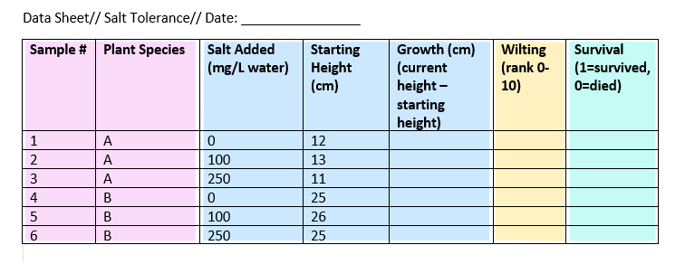
Key terms used in this workshop.
Central tendancy:
Mean: the average. Best for roughly symmetrical data.
Median: the middle value. Robust to outliers and skew.
Mode: the most frequent value (useful for categories).
Spread:
Standard deviation (SD): how spread out the data are around the mean.
Standard error (SE): SD / √n. How precisely the mean has been estimated.
95% confidence interval (CI): a range that is likely to contain the true mean (mean ± about 2 × SE).
Coefficient of variation (CV): SD / mean. Compares variability between variables measured on different scales.
Interquartile range (IQR): the range of the middle 50% of the data (Q3 − Q1).
Variance: SD². The average squared distance from the mean.
# Week 3 workshop - Descriptive statistics# Written by Nicholas Wu, 1234578, 11/03/2027# install.packages("patchwork") # run once in the console if neededlibrary(tidyverse) # data wrangling and ggplot2library(patchwork) # combine several ggplots into one figure# setwd("C:/Users/YOUR-NAME/Documents/ECS200")
Whether to use the mean or the median depends on the shape of the distribution. In skewed data, a few extreme values pull the mean towards the long tail, while the median stays in the middle.
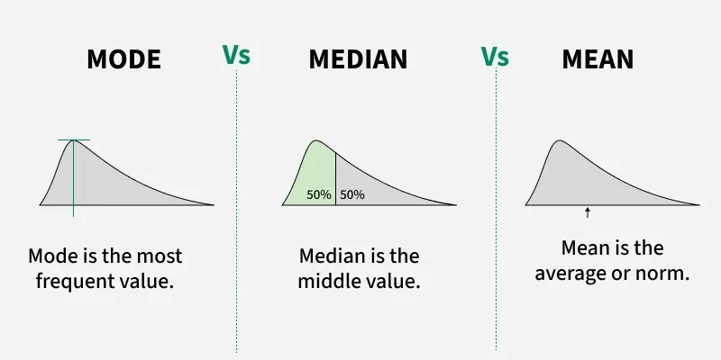
Code
# Simulate a symmetrical (normal) and a right-skewed variable, 100 values eachset.seed(1) # makes the random numbers the same every timedist_data <-data.frame(normal =rnorm(100, mean =10, sd =2),skewed =rexp(100, rate =0.2))dist_data %>% dplyr::summarise(normal_mean =mean(normal),normal_median =median(normal),skewed_mean =mean(skewed),skewed_median =median(skewed))
For the normal data the mean and median are almost the same (about 10). For the skewed data the mean (about 4.7) is much larger than the median (about 3).
Code
dist_data %>% dplyr::summarise(n = dplyr::n(),mean =mean(skewed),variance =var(skewed),sd =sd(skewed), # standard deviationse = sd /sqrt(n), # standard errorci_lower = mean -qt(0.975, df = n -1) * se, # lower 95% confidence limitci_upper = mean +qt(0.975, df = n -1) * se, # upper 95% confidence limitcv = sd / mean) # coefficient of variation
n mean variance sd se ci_lower ci_upper cv
1 100 4.656321 13.85892 3.722757 0.3722757 3.917645 5.394997 0.799506
qt(0.975, df = n - 1) is the number of standard errors needed for a 95% CI. It is close to 2 for large samples and gets bigger for small samples.
The SD describes the spread of the data, and does not shrink as you collect more data.
The SE and CI describe the uncertainty in the mean, and get smaller as the sample size grows.
The SD and CI assume the data are roughly symmetrical, so for skewed data a boxplot (median and quartiles) is often a better summary.
Code
# Long format: one column says which distribution, one column holds the valuedist_long <- dist_data %>% tidyr::pivot_longer(cols =everything(), names_to ="data_type", values_to ="value")dist_stats <- dist_long %>% dplyr::group_by(data_type) %>% dplyr::summarise(mean =mean(value),sd =sd(value))# Histograms with the mean (solid) and mean +/- 1 SD (dashed)ggplot2::ggplot(dist_long, ggplot2::aes(x = value)) + ggplot2::geom_histogram(bins =30, fill ="grey80") + ggplot2::geom_vline(data = dist_stats, ggplot2::aes(xintercept = mean), linewidth =1) + ggplot2::geom_vline(data = dist_stats, ggplot2::aes(xintercept = mean - sd), linetype ="dashed") + ggplot2::geom_vline(data = dist_stats, ggplot2::aes(xintercept = mean + sd), linetype ="dashed") + ggplot2::facet_wrap(~ data_type, scales ="free") + ggplot2::labs(x ="Value", y ="Frequency",subtitle ="Mean ± SD: for skewed data, mean − SD can even fall below zero") + ggplot2::theme_classic()
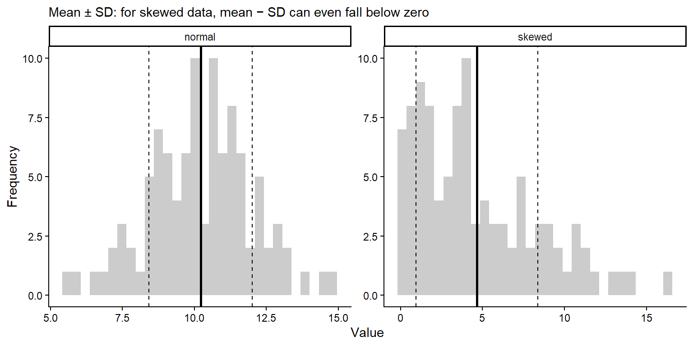
Quantiles split sorted data into equal parts. The quartiles (25%, 50% and 75%) are what a boxplot shows.
Code
# Min, quartiles and max with base Rquantile(dist_data$skewed)
# The same with dplyr (this also works with group_by())dist_data %>% dplyr::summarise(min =min(skewed),q1 =quantile(skewed, probs =0.25),median =median(skewed),q3 =quantile(skewed, probs =0.75),max =max(skewed),iqr =IQR(skewed))
min q1 median q3 max iqr
1 0.1012521 1.714387 3.781882 7.128459 16.29669 5.414072
The app below shows why it matters whether you plot the SD, SE or CI. Increase the sample size and see what happens to each.
NoteWhat happens, and why? (try the app first, then open this)
The three error bars answer different questions:
Formula
Question it answers
When n increases
When the true SD increases
SD
\(\sqrt{\frac{\sum(x - \bar{x})^2}{n - 1}}\)
How much do individual measurements vary?
Stays about the same
Gets wider
SE
\(\frac{SD}{\sqrt{n}}\)
How precisely do we know the mean?
Shrinks
Gets wider
95% CI
\(\bar{x} \pm t \times SE\)
Where is the true population mean likely to be?
Shrinks, fastest at small n
Gets wider
Increasing the sample size
SD stays about the same. The SD describes the spread of the population, and that does not change because you measured more individuals. With a larger sample, your estimate of the SD just gets closer to the true value (it jumps around less when you press Resample).
SE shrinks. The SE divides the SD by \(\sqrt{n}\). More data gives a more precise estimate of the mean, but with diminishing returns: to halve the SE you need four times as many samples (e.g. from 10 to 40).
The CI shrinks even faster at small n. The CI is the SE multiplied by a value from the t distribution. With very few samples, t is large (4.3 when n = 3) because we are unsure about the SD as well as the mean. As n grows, t drops towards about 2 (2.26 at n = 10, 1.98 at n = 100), so the 95% CI ends up at roughly 2 × SE.
Increasing the true SD
All three get wider in proportion. If individuals vary more, the data are more spread out (larger SD), and the mean is harder to pin down (larger SE and CI). Doubling the SD doubles all three bars.
The y-axis of the app rescales with the SD, so the bars may look similar. Read the numbers under the plot.
Why it matters
Use the SD when you want to show how variable the organisms or sites are (e.g. “lizards weighed 15.2 ± 2.1 g, mean ± SD”).
Use the SE or 95% CI when you want to show how precisely you have estimated the mean, or to compare groups. The CI is the easier one to interpret.
A small SE does not mean the data have little variation; it may just mean a large sample. This is why you must always state which one your error bars show.
App: standard deviation, standard error and confidence interval
viewof ds_n = Inputs.range([3,200], {value:10,step:1,label:"Sample size (n)"})viewof ds_sd = Inputs.range([0.5,5], {value:2,step:0.1,label:"True SD of the population"})viewof ds_seed = Inputs.button("Resample")
Code
ds_data = {const r =rng(33+ ds_seed);const x =rnorm(r, ds_n,20, ds_sd);const m =mean(x), s =sd(x), se = s /Math.sqrt(ds_n), ci =qt975(ds_n -1) * se;const pts = x.map((v) => ({x:1+ (r() -0.5) *0.5,y: v}));const bars = [ {x:2.2,lo: m - s,hi: m + s,lab:"Mean ± SD"}, {x:3.0,lo: m - se,hi: m + se,lab:"Mean ± SE"}, {x:3.8,lo: m - ci,hi: m + ci,lab:"Mean ± 95% CI"} ];return {pts, bars, m, s, se, ci};}html`<div>${Plot.plot({width:560,height:300,marginLeft:45,x: {domain: [0.5,4.3],ticks: [1,2.2,3.0,3.8],tickFormat: (d) => ({1:"Raw data",2.2:"± SD",3:"± SE",3.8:"± 95% CI"})[d],label:null},y: {label:"Measurement",grid:true,domain: [20-3.5* ds_sd,20+3.5* ds_sd]},marks: [ Plot.dot(ds_data.pts, {x:"x",y:"y",fill: grey,fillOpacity:0.5,r:2.5}), Plot.ruleX(ds_data.bars, {x:"x",y1:"lo",y2:"hi",stroke: red,strokeWidth:3}), Plot.dot(ds_data.bars, {x:"x",y: () => ds_data.m,fill: red,r:5}) ]})}<div class="app-verdict">Mean = <b>${fmt(ds_data.m)}</b>, SD = <b>${fmt(ds_data.s)}</b>, SE = <b>${fmt(ds_data.se)}</b>, 95% CI half-width = <b>${fmt(ds_data.ci)}</b>.The SD stays about the same as <i>n</i> grows (it describes the data), while the SE and CI shrink (they describe how precisely we know the mean). Always say which one your error bars show.</div></div>`
# mean = 2.56, SD = 2.13, n = 9. A mean of 2.56 individuals is not a possible# count, but it is still a valid average. The median (2) and range (0 to 6)# are also useful for small counts.
By groups
Most of the time you want summaries for each group, e.g. each site, species or treatment. Convert the data to long format, then use group_by().
Code
survey_long <- survey_data %>% tidyr::pivot_longer(cols = species_1:species_4,names_to ="species",values_to ="abundance")# Mean, SD and sample size of abundance for each site and speciessurvey_summary <- survey_long %>% dplyr::group_by(site, species) %>% dplyr::summarise(mean =mean(abundance),sd =sd(abundance),n = dplyr::n(),.groups ="drop") # remove the grouping afterwardssurvey_summary
# A tibble: 12 × 5
site species mean sd n
<chr> <chr> <dbl> <dbl> <int>
1 A species_1 11.3 4.04 3
2 A species_2 2.67 2.08 3
3 A species_3 1.67 1.53 3
4 A species_4 5.67 2.52 3
5 B species_1 6.33 2.52 3
6 B species_2 7 3 3
7 B species_3 5 1 3
8 B species_4 2.33 1.53 3
9 C species_1 21 3.61 3
10 C species_2 1.33 1.53 3
11 C species_3 1 1 3
12 C species_4 7.33 2.52 3
Code
# Mean +/- SD for each species at each siteggplot2::ggplot(survey_summary, ggplot2::aes(x = site, y = mean, ymin = mean - sd, ymax = mean + sd, colour = species)) + ggplot2::geom_pointrange(position = ggplot2::position_dodge(width =0.6)) +# dodge so species don't overlap ggplot2::labs(x ="Site", y ="Abundance (mean ± SD)", colour ="Species") + ggplot2::theme_classic()
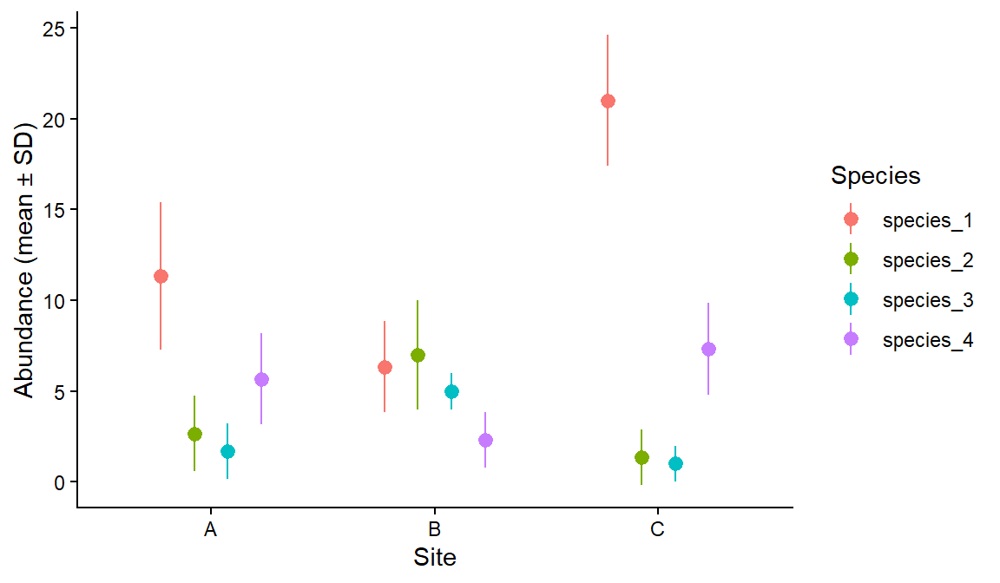
Part 2: Figures with ggplot2
The “gg” in ggplot2 stands for grammar of graphics. You build a plot in layers, joined with +:
ggplot2::ggplot(data, ggplot2::aes(x = ..., y = ...)) sets the data and which columns go on which axis (the aesthetics).
geom_...() layers draw the data: points, lines, boxes, bars.
labs(), scale_...(), theme_...() and facet_...() adjust labels, colours, the overall look and panels.
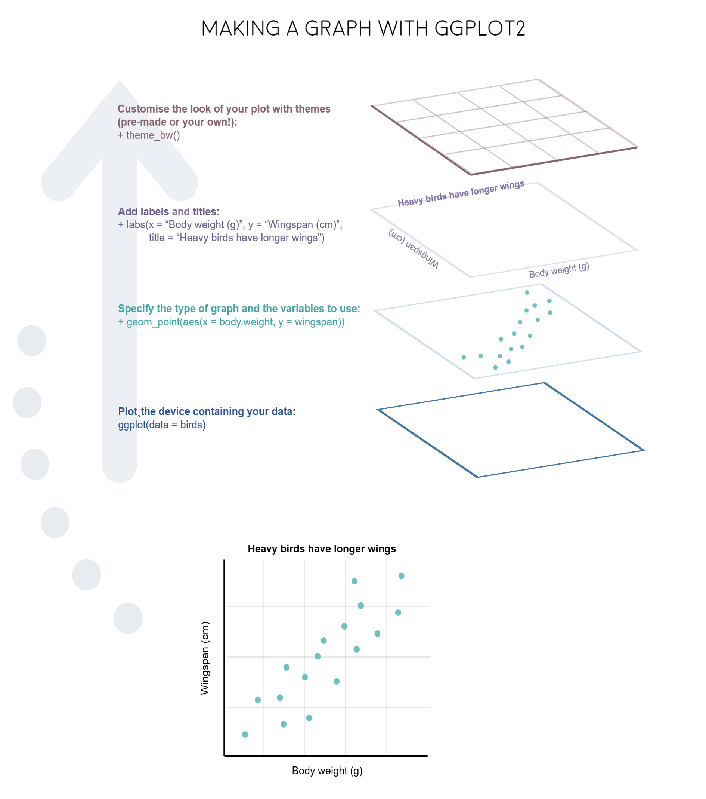
Before plotting, decide which variable is the independent (predictor, on the x-axis) and which is the dependent (response, on the y-axis) variable.
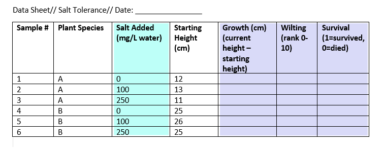
Plot types
Which plot to use depends on the types of variables you have:
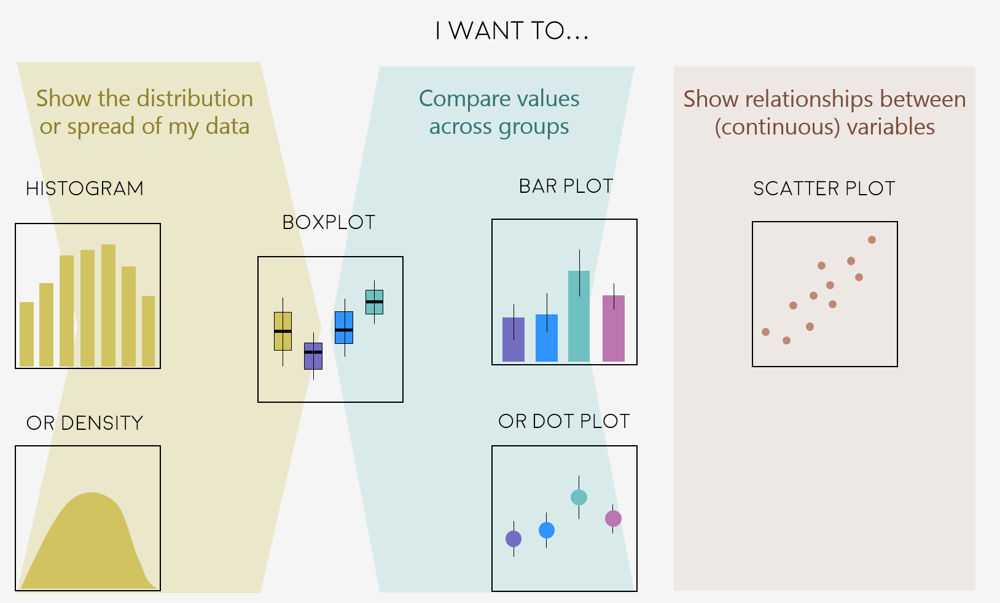
We will use the clean sugar maple data from Weeks 1 and 2 to compare stem length between the calcium-treated (W1) and untreated (Reference) watersheds.
the box spans the lower (Q1) and upper (Q3) quartiles, so it contains the middle 50% of the data (the IQR);
the whiskers extend to the most extreme values within 1.5 × IQR of the box;
points beyond the whiskers are potential outliers.
Code
ggplot2::ggplot(plant_data, ggplot2::aes(x = watershed, y = stem_length)) + ggplot2::geom_boxplot() + ggplot2::labs(x ="Watershed", y ="Stem length (mm)") + ggplot2::theme_classic()
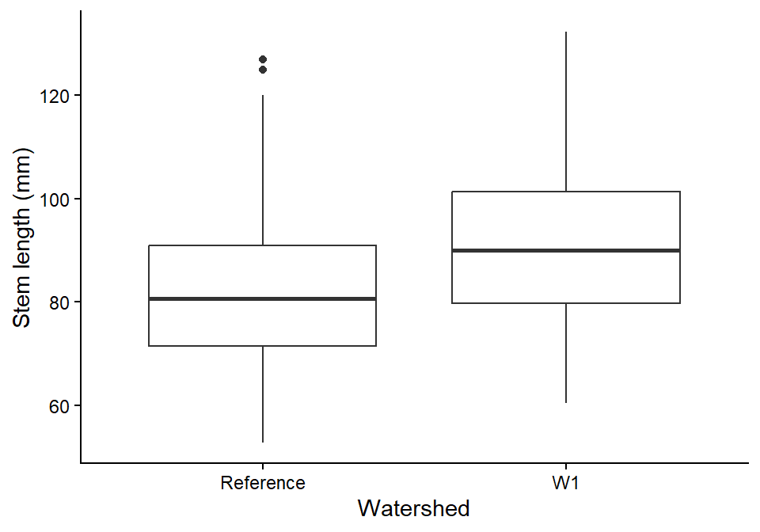
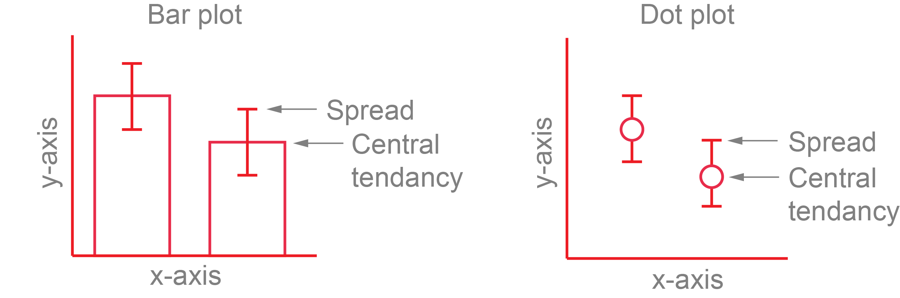
Bar plots of means hide the data, so a dot plot of the mean ± SD (or SE or CI) over the raw data is usually a better choice. You need a summary table and the raw data, so each layer gets its own data =.
Code
plant_summary <- plant_data %>% dplyr::group_by(watershed) %>% dplyr::summarise(mean =mean(stem_length),sd =sd(stem_length))# Bar plot of the mean +/- SDbar_plot <- ggplot2::ggplot(plant_summary, ggplot2::aes(x = watershed, y = mean)) + ggplot2::geom_col(fill ="grey70") + ggplot2::geom_errorbar(ggplot2::aes(ymin = mean - sd, ymax = mean + sd), width =0.1) + ggplot2::labs(x ="Watershed", y ="Stem length (mm)", title ="Bar plot") + ggplot2::theme_classic()# Raw data with the mean +/- SD on topdot_plot <- ggplot2::ggplot() + ggplot2::geom_jitter(data = plant_data, ggplot2::aes(x = watershed, y = stem_length),width =0.15, alpha =0.2) + ggplot2::geom_pointrange(data = plant_summary, ggplot2::aes(x = watershed, y = mean, ymin = mean - sd, ymax = mean + sd),colour ="#e12744") + ggplot2::labs(x ="Watershed", y ="Stem length (mm)", title ="Dot plot with raw data") + ggplot2::theme_classic()# patchwork: put two plots side by side with +bar_plot + dot_plot
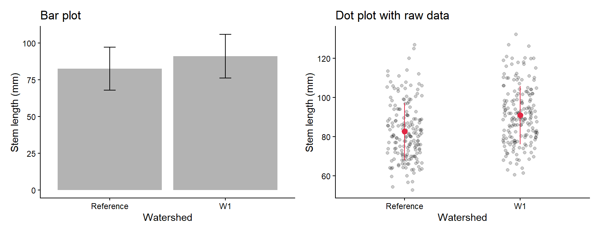
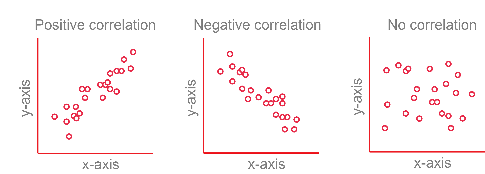
A scatterplot shows the relationship between two numeric variables.
Code
ggplot2::ggplot(plant_data, ggplot2::aes(x = stem_length, y = stem_dry_mass, colour = watershed)) + ggplot2::geom_point() + ggplot2::labs(x ="Stem length (mm)", y ="Stem dry mass (g)", colour ="Watershed") + ggplot2::theme_classic()
Themes change the overall look in one line, e.g. theme_classic(), theme_bw() or theme_minimal().
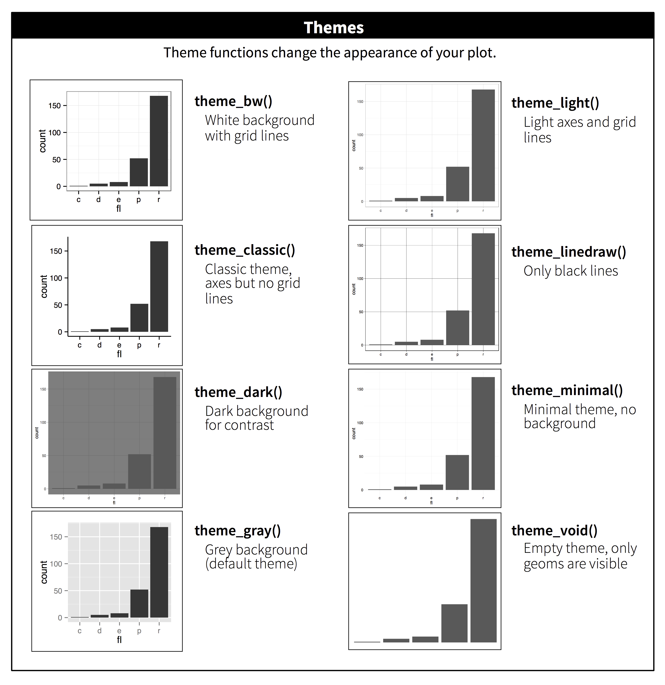
Always give axes informative labels with units. labs() sets the axis, legend and title labels in one place.
Code
ggplot2::ggplot(plant_data, ggplot2::aes(x = watershed, y = stem_length)) + ggplot2::geom_boxplot() + ggplot2::labs(title ="Your title",subtitle ="Your subtitle",x ="Treatment", # use x = NULL to remove a labely ="Stem length (mm)") + ggplot2::theme_classic()
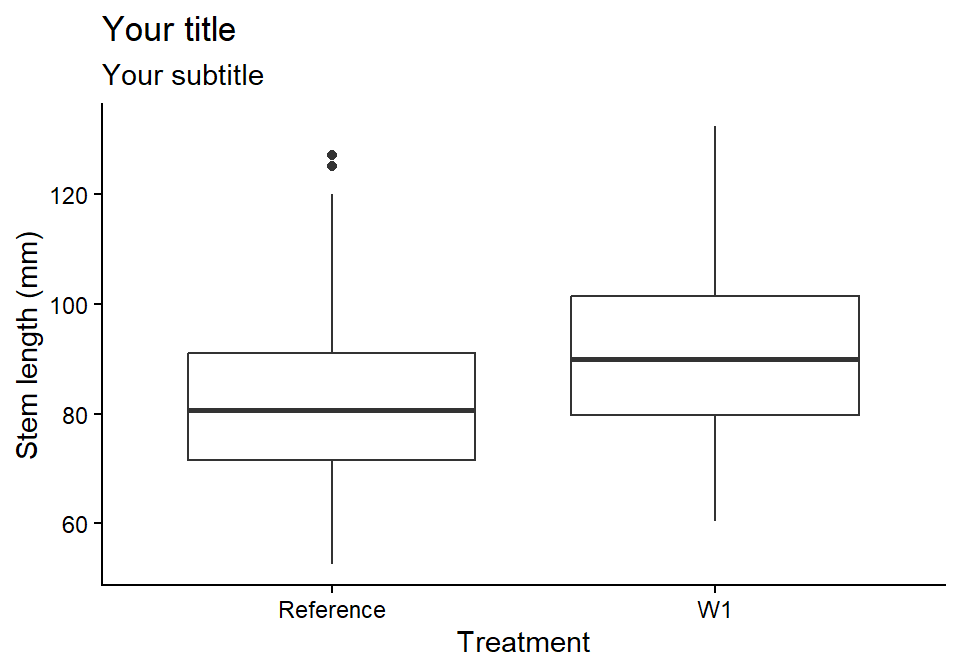
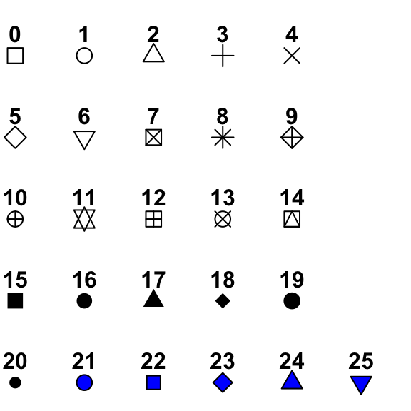
Point shapes and their numbers.
Code
ggplot2::ggplot(plant_data, ggplot2::aes(x = stem_length, y = stem_dry_mass, shape = watershed)) + ggplot2::geom_point(size =2) + ggplot2::scale_shape_manual(values =c(1, 16)) +# open and filled circles ggplot2::labs(x ="Stem length (mm)", y ="Stem dry mass (g)", shape ="Watershed") + ggplot2::theme_classic()
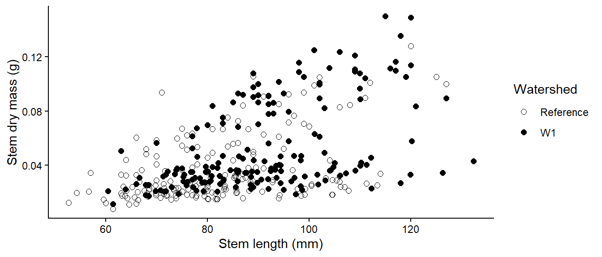
colour changes outlines, points and lines, and fill changes the inside of shapes. Set one colour for everything inside the geom, or map a variable inside aes() and choose the colours with scale_colour_manual() or scale_fill_manual(). You can use R colour names (e.g. "tomato") or hex codes (e.g. "#e12744"). Choose colours that are colour-blind friendly, such as those in the colorspace package.
Code
# One fill colour for every boxone_colour <- ggplot2::ggplot(plant_data, ggplot2::aes(x = watershed, y = stem_length)) + ggplot2::geom_boxplot(fill ="#F5C4B8") + ggplot2::labs(x ="Watershed", y ="Stem length (mm)", subtitle ="One colour") + ggplot2::theme_classic()# Fill colour by groupgroup_colour <- ggplot2::ggplot(plant_data, ggplot2::aes(x = watershed, y = stem_length, fill = watershed)) + ggplot2::geom_boxplot() + ggplot2::scale_fill_manual(values =c("Reference"="#B8CEF5", "W1"="#F5C4B8")) + ggplot2::labs(x ="Watershed", y ="Stem length (mm)", fill ="Watershed", subtitle ="Colour by group") + ggplot2::theme_classic()one_colour + group_colour
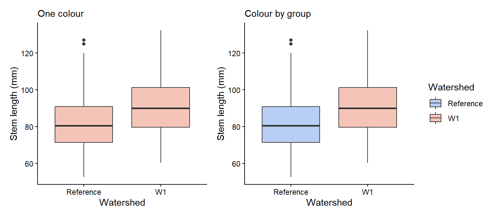
A numeric variable mapped to colour gives a colour gradient:
Code
ggplot2::ggplot(plant_data, ggplot2::aes(x = stem_length, y = stem_dry_mass, colour = leaf_dry_mass)) + ggplot2::geom_point() + ggplot2::scale_colour_viridis_c() +# a colour-blind-friendly gradient ggplot2::labs(x ="Stem length (mm)", y ="Stem dry mass (g)", colour ="Leaf dry\nmass (g)") + ggplot2::theme_classic()
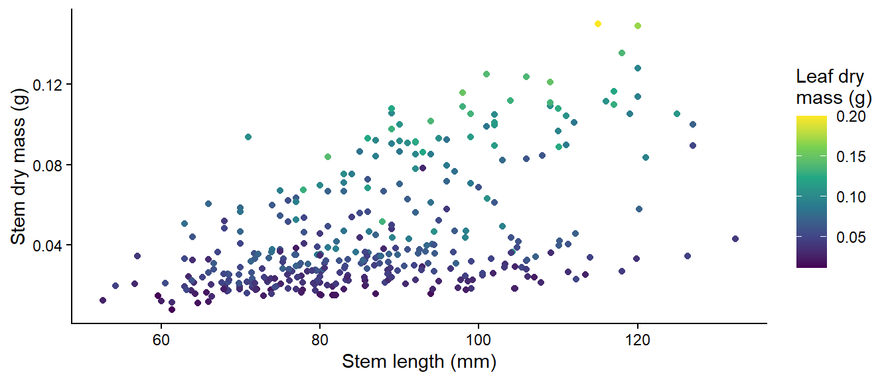
facet_wrap() splits a plot into panels, one for each level of a variable. Decide which variable to put in panels and which to show with colour based on the comparison you want readers to make.
Code
ggplot2::ggplot(plant_data, ggplot2::aes(x = stem_length, y = stem_dry_mass, colour = watershed)) + ggplot2::geom_point(alpha =0.7) + ggplot2::scale_colour_manual(values =c("Reference"="grey40", "W1"="#e12744")) + ggplot2::labs(x ="Stem length (mm)", y ="Stem dry mass (g)", colour ="Watershed") + ggplot2::facet_wrap(~ year) +# one panel per year ggplot2::theme_classic()
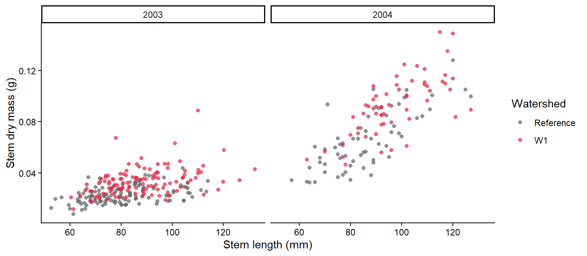
The patchwork package combines separate ggplots: + or | puts them side by side, and / stacks them. plot_annotation() adds panel letters.
Code
(one_colour + group_colour) / bar_plot + patchwork::plot_annotation(tag_levels ="a") # label panels a, b, c
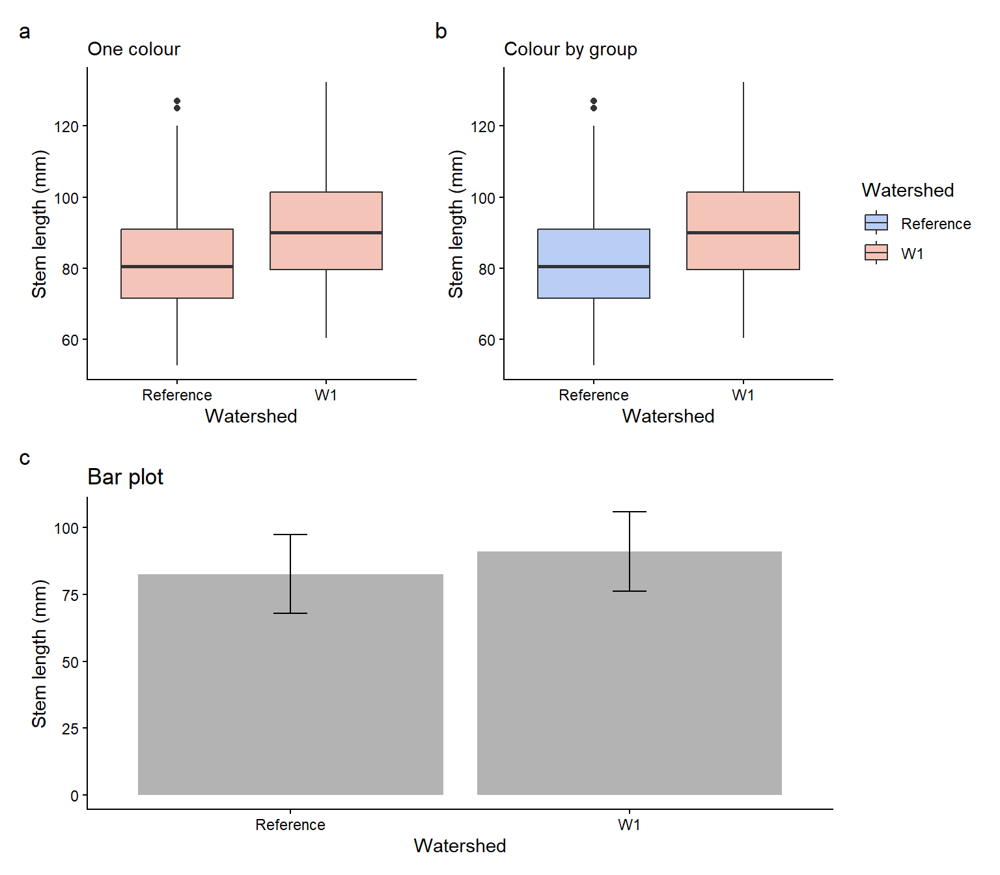
To save a figure for your report, use ggplot2::ggsave("figures/fig1.png", width = 16, height = 10, units = "cm", dpi = 300).
width is the width of the plot in cm, height is the height of the plot in cm, and dpi (dots per inch) is the resolution of the figure
Continue in the script you started in Week 2 (with total_mass_mg), under the header “Week 3 workshop - Descriptive statistics”.
Plot the distribution of total_mass_mg. Is it symmetrical or skewed?
Based on your answer to Q1, choose suitable measures of centre and spread, and calculate them, together with the sample size, for each combination of watershed and year. Explain your choice in a comment.
What are the centre, spread and sample size for W1 seedlings in 2003? Are they similar for W1 seedlings in 2004? If not, describe the difference.
Make a publication-ready figure that shows the raw data and your chosen centre and spread for each watershed and year. Use colour, label the axes with units, and use facet_wrap() for the years.
In one or two sentences, describe what the figure shows about the effect of calcium on seedling mass.
The figure could look something like either of these:
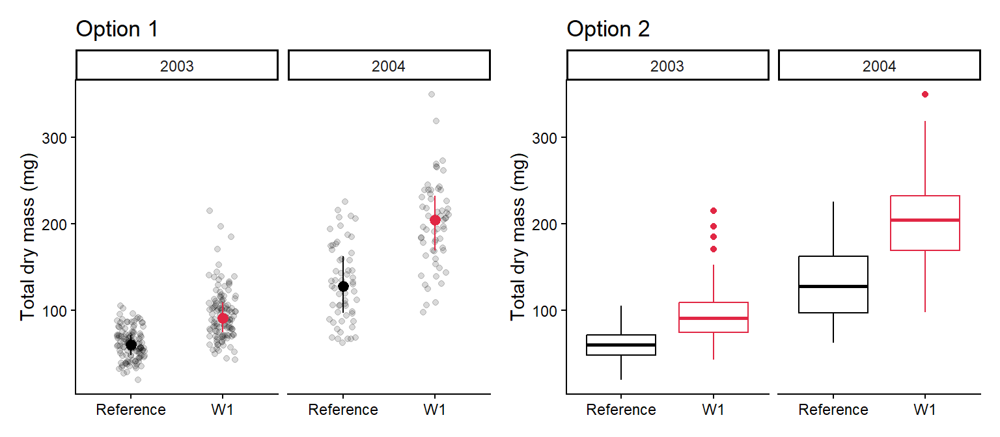
NoteHow your assessment is marked
Submit one R script (.R) before the end of the class. Write your answers to written questions as # comments next to the code that produced them.
Score
What it looks like
0
No submission or no attempt.
0.25
Submitted, but a very poor attempt (e.g. incomplete, or lots of gaps).
0.5
Most questions answered, or all answered but most annotations missing.
0.75
All questions answered, but some annotations missing or some answers incorrect.
1
Everything completed, with annotations on all code so the marker can follow it.
Tip: an annotation is a short # comment that says what the line does and why. For example: # remove the one plant with a stem dry mass of 7.4 g (data entry error).
pie_crab.csv contains carapace widths (size, mm) of Atlantic marsh fiddler crabs (Minuca pugnax) from 13 salt marshes on the east coast of the USA, collected to test Bergmann’s rule (animals are larger in colder places, at higher latitudes). Other columns: latitude, site, mean air and water temperature (air_temp, water_temp) and their SDs.
Atlantic marsh fiddler crab (Minuca pugnax).
Run a quality check. Are there missing values or duplicated rows? Are the duplicates real?
Calculate the mean, SD and sample size of size for each site. Which site has the largest crabs, and which has the fewest crabs measured?
Plot carapace width against latitude, showing the raw data and the site means (coloured by air temperature). What pattern do you see? You will analyse these data in Week 7.